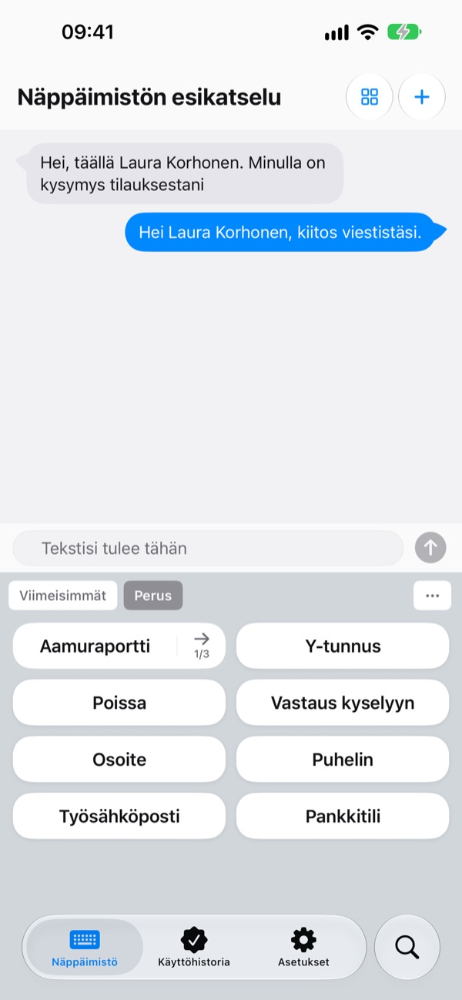
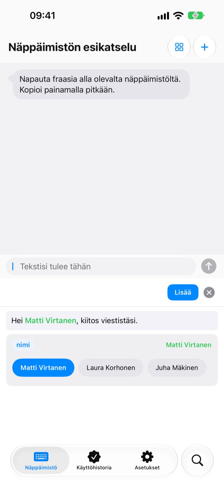
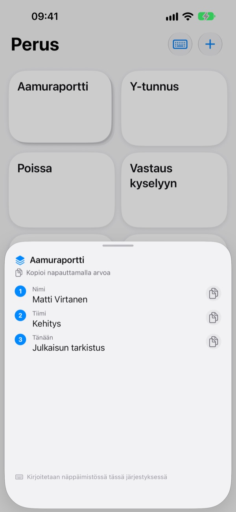
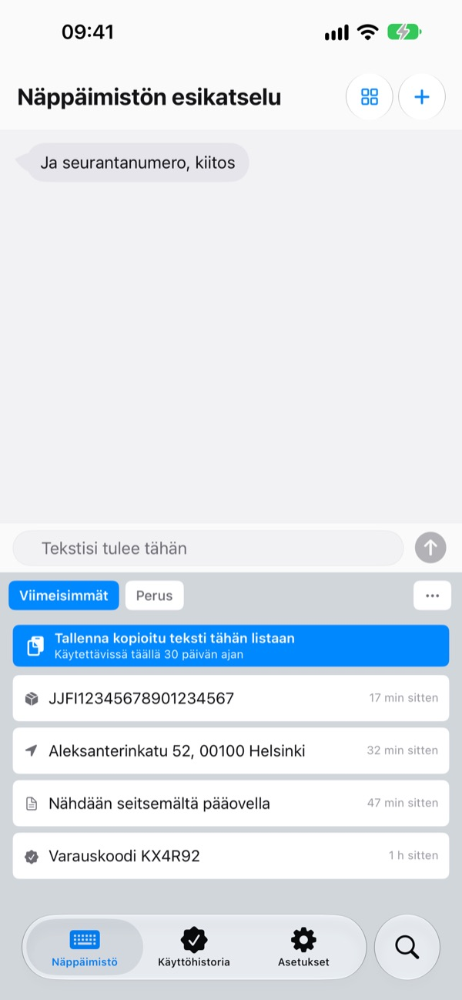
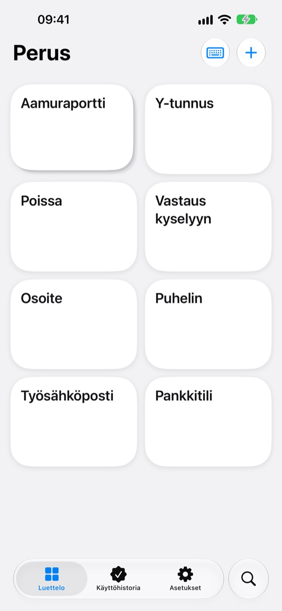

Lopeta saman tekstin
näpyttely
Tallenna tilinumerosi, osoitteesi tai vakiintunut sähköpostin aloituksesi kerran. Viesteissä, Mailissa, Safarissa ja kaikkialla, missä kirjoitat, se on näppäimistöllä yhden napautuksen päässä.
Kaikki ominaisuudet ovat ilmaisia 100 ensimmäiseen lisäykseen asti.

Kokeile heti tässä
Tämä on sovelluksen oma näkymä Näppäimistön esikatselu. iPhonessa tämä näppäimistö tulee esiin kaikkialla, missä voit kirjoittaa.
Montako kertaa kirjoitit tänään tilinumerosi?
Kaveri kysyy, mihin hän maksaa osuutensa, joten avaat pankkisovelluksen ja kopioit numeron. Sitten näppäilet toimitusosoitteesi taas kirjain kirjaimelta ja kirjoitat saman tervehdyksen jokaiseen asiakasviestiin. ClipKeyboard pitää nämä rivit valmiina näppäimistöllä, yhden napautuksen päässä.
Täytä vain se, mikä vaihtuu
Pohjassa vaihtuvat kohdat, kuten {nimi} tai {päivä}, jäävät tyhjiksi kentiksi.
Kun lisäät pohjan, se kysyy vain nämä kentät, ja voit valita aiemmin käyttämäsi arvon.

Monta arvoa järjestyksessä
Pino kokoaa yhteen näppäimeen useita arvoja, kuten nimen, tiimin ja päivän tehtävän.
Napauttamalla lisäät nykyisen kohdan, ja viereinen nuoli siirtää seuraavaan.

Kopioimasi löytyy myös näppäimistöltä
Juuri kopioimasi seurantanumero, osoite tai puhelinnumero ilmestyy näppäimistön Viimeisimmät-välilehdelle.
Sähköpostiosoitteet, puhelinnumerot, osoitteet, korttinumerot ja IBAN-numerot tunnistetaan ja lajitellaan, joten löydät ne sekunnissa.

Arkaluonteiset lukon taakse
Tee passin ja korttien numeroista suojattuja fraaseja, jotka aukeavat vain Face ID:llä.
Onko tilinumero paperilla? Ota kuva ja pyyhkäise sormella vain tarvitsemiesi merkkien yli.

Aloita kolmessa vaiheessa
- 1
Lisää näppäimistö
Asetukset > Yleiset > Näppäimistö > Näppäimistöt > Lisää uusi näppäimistö ja valitse ClipKeyboard.
- 2
Salli täysi pääsy
Näppäimistö tarvitsee sen lukeakseen sovellukseen tallentamasi fraasit. Kirjoittamasi teksti ei koskaan lähde laitteeltasi.
- 3
Vaihda pitämällä maapalloa
Paina missä tahansa sovelluksessa pitkään näppäimistön 🌐-kuvaketta, valitse ClipKeyboard ja napauta näppäintä.
Mitä näppäimistölle voi tallentaa
- Fraasi
- Lisää juuri sen, minkä tallensit, rivinvaihdot ja emojit mukaan lukien.
- Pohja
- Aaltosulkeissa olevat kentät, kuten {nimi}, täytetään joka lisäyskerralla.
- Pino
- Useita arvoja yhdessä näppäimessä. Nuoli siirtää seuraavaan kohtaan.
- Suojattu fraasi
- Lisätään vasta Face ID:n tai Touch ID:n jälkeen. (Pro)
- Kuvafraasi
- Napauta kopioidaksesi kuvan ja liitä se viestiisi.
- Leikepöydän historia
- Säilyttää kopioimasi lajiteltuna tyypin mukaan ja valmiina uudelleenkäyttöön.
- Skannaa teksti
- Pyyhkäise kuvassa olevan tekstin yli ja ota vain se osa. Kuvaa ei säilytetä.
Koko käyttöopas on osoitteessa m1zz.github.io/ClipKeyboard/fi/tutorial.html.
Käytä sata kertaa ja päätä sitten
Ilmainen
- Kaikki ominaisuudet, kunnes olet lisännyt fraaseja 100 kertaa
- Kaikki tekemäsi toimii senkin jälkeen
- Uudet kohteet: enintään 10 fraasia, 3 pohjaa, 3 pinoa ja 5 kuvaa
- Leikepöydän historiassa 50 kohdetta
Plus · Pro
- Plus: rajattomasti fraaseja, pohjia, pinoja ja kuvia, leikepöydän historiassa 100 kohdetta
- Pro: kaikki Plusin ominaisuudet sekä iCloud-varmuuskopio, Face ID -lukitus ja synkronointi laitteiden välillä (beta)
Kumpikin on saatavilla vuositilauksena tai kertaostona, joka on voimassa pysyvästi.
Fraasejasi ei koskaan poisteta, vaikka et maksaisi tai tilaus päättyisi. Ei mainoksia.
Kysymyksiä
Fraasini eivät näy näppäimistöllä.
Täysi pääsy on todennäköisesti pois päältä. Avaa Asetukset > Yleiset > Näppäimistö > Näppäimistöt > ClipKeyboard ja laita Salli täysi pääsy päälle.
Voinko pitää tutun näppäimistöni?
Voit. Kun fraasi on lisätty, ClipKeyboard vaihtaa takaisin näppäimistöön, jota käytit, ja tämän voi kytkeä pois asetuksista. Voit myös kirjoittaa itse ClipKeyboardilla: siinä on iPhonen kaltaiset näppäimet 23 kielellä.
Voiko sillä kirjoittaa japania tai kiinaa?
Japania kanaan asti ja kiinaa pinyiniin ja zhuyiniin asti. Muunnosta kanji- ja hanzi-merkeiksi ei vielä ole.
Kopioimani asiat eivät näy historiassa.
iOS estää muita sovelluksia lukemasta leikepöytää omin päin. Avaa sovellus kerran ja käytä sitten näppäimistöä, niin ne tulevat näkyviin.
Miten poistan pohjaan tallennettuja arvoja?
Napauta pohjan muokkausnäkymässä kenttää, niin näet sen tallennetut arvot. Poista arvo pyyhkäisemällä.
Mitä tapahtuu 100 lisäyksen jälkeen?
Kaikki tekemäsi fraasit, pohjat ja pinot toimivat edelleen. Ilmaisversion rajat koskevat vain uusia kohteita. Valitse Plus tai Pro, jos haluat eroon rajoista.
Lähetetäänkö fraasejani jonnekin?
Ei. Ne tallennetaan tälle laitteelle, emmekä kerää niiden sisältöä. Kun iCloud-varmuuskopio on päällä, ne tallennetaan salattuina omaan iCloudiisi. Keräämme vain nimetöntä käyttötilastoa sovelluksen parantamiseksi emmekä käytä kolmansien osapuolten analytiikkaa.
Entä kun vaihdan puhelinta?
Kun Pron iCloud-varmuuskopio on päällä, palauta tiedot uudelle laitteelle samalla Apple-tilillä. Myös kuvafraasit siirtyvät. Palautus korvaa laitteella jo olevat fraasit.
Toimiiko se iPadilla?
Toimii, sekä iPhonessa että iPadissa.
Ongelmaani ei löydy tästä.
Lähetä meille sähköpostia alta ja kerro, mitä tapahtui. Vastaamme yleensä vuorokauden sisällä.
Kysyttävää tai palautetta? Kirjoita osoitteeseen leeo@kakao.com.